The benefits of a private tutor, for every student with an iPad.
Klera is an iPad whiteboard that watches how you solve with Apple Pencil, notices where you get stuck, and helps only as much as you need, in handwriting, on your own page.
That bulb is Klera. It's watching your pointer. Click it to see it think.
Write something. Klera is watching.
A tutor reacts to how you work, not only to what you ask.
Write with your mouse, finger or stylus. Then stop for a moment, or rub something out.
This pad only knows when you pause and when you rub out. On the iPad, Klera also reads what you wrote, line by line, and how the pen moves.
How it works
Three things, every session.
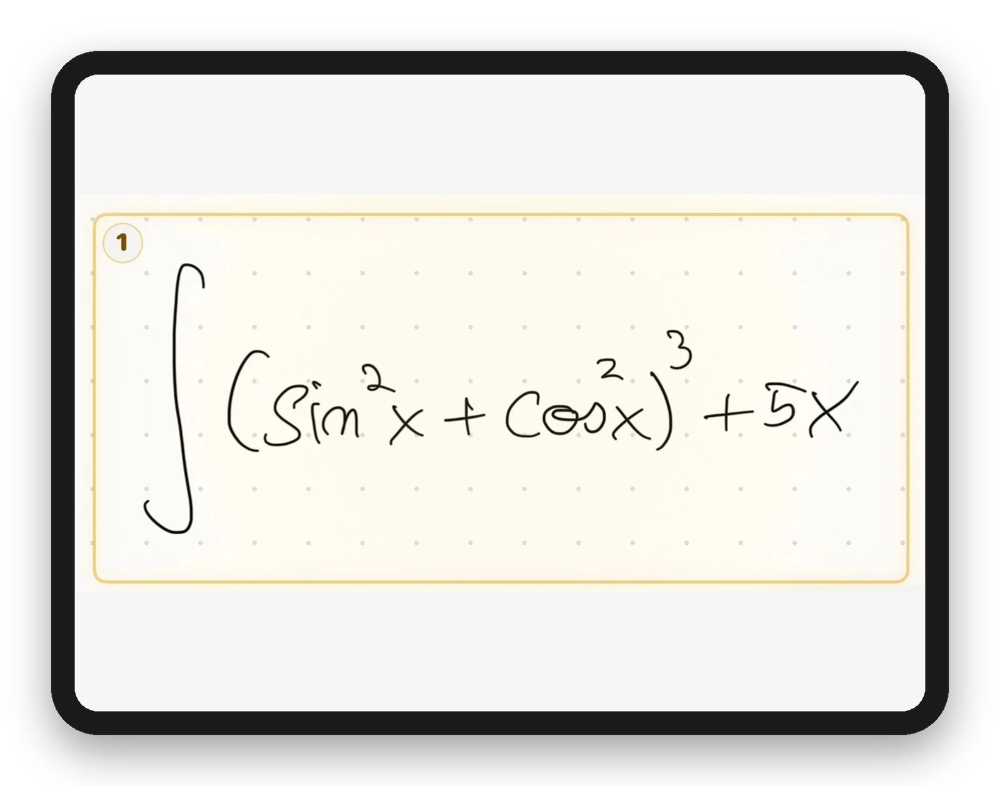
1 You write with Apple Pencil
Work the problem the way you normally would. No typing, no photos.
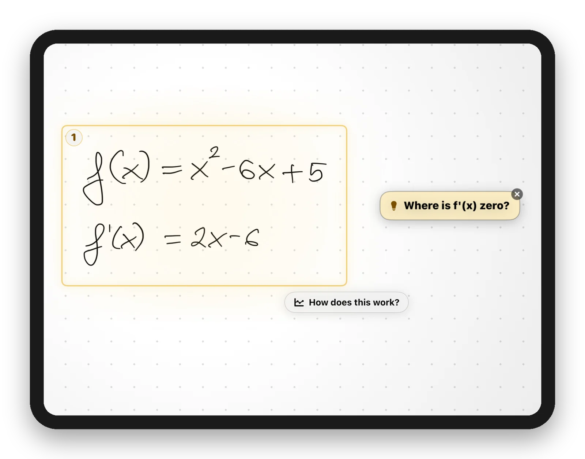
2 Klera sees where you get stuck
It reads your working as you go, line by line.
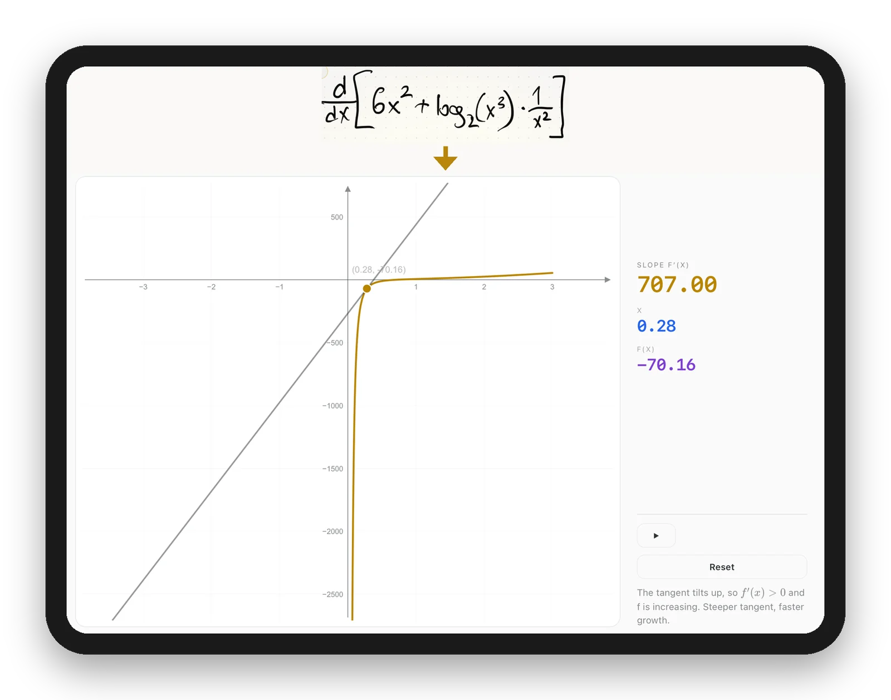
3 It hints, asks, or stays quiet
Sometimes a nudge, sometimes a question, sometimes a live graph. Sometimes nothing.
Ask for exactly what you need
Six kinds of help. Pick one and watch what Klera does.
A hint lands next to your working
A nudge toward the idea you're missing, placed beside the line you're on. Ask again and it gets more specific instead of repeating itself.
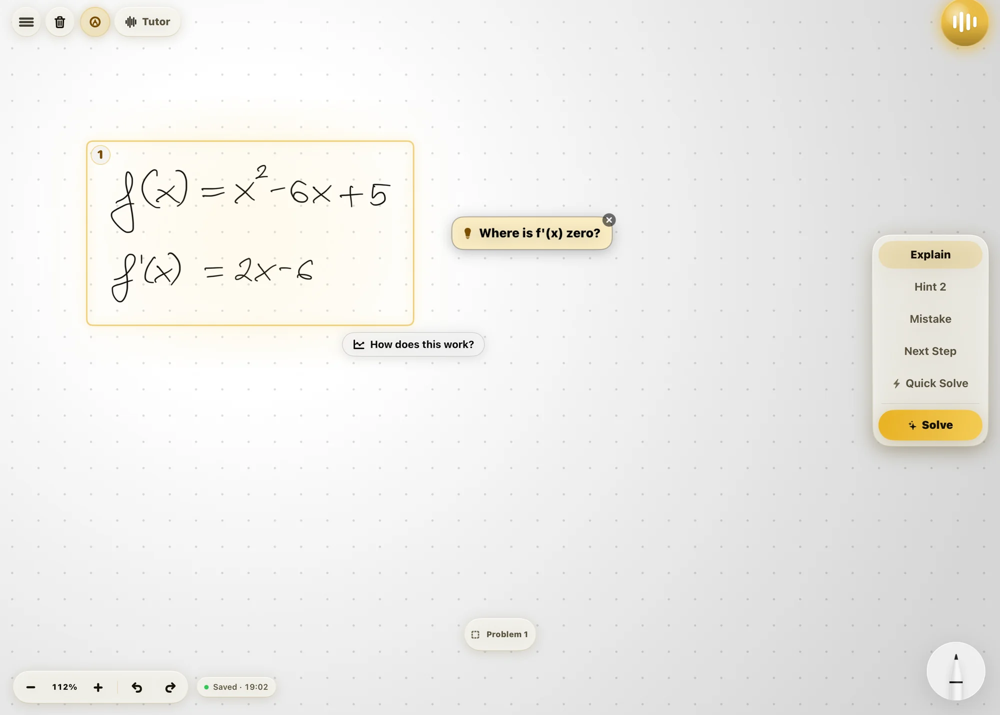
One line, then the pen is yours again
Klera checks the lines you've already written, then writes the single move that comes next, in gold, under your working. Then it stops and waits for you.
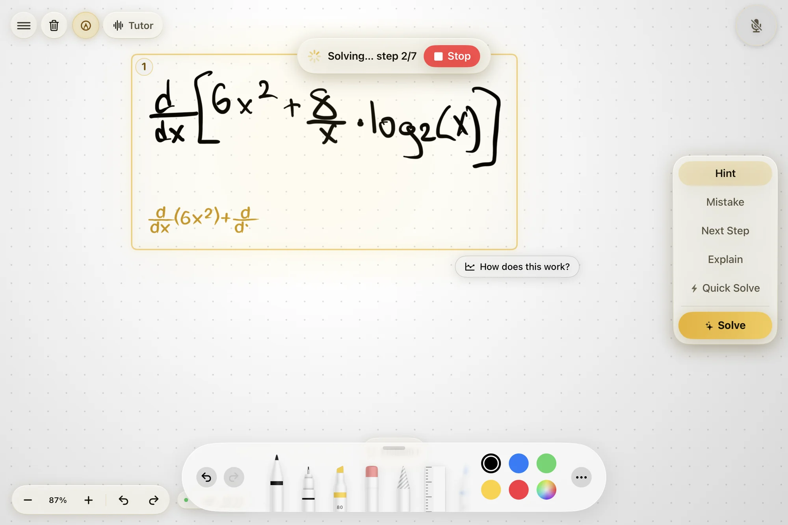
Teach me why
Explain gives you the reason, spoken and on the board. Tap Teach me why on it and Klera builds a short lesson from your own problem, with things to drag and questions to answer. Here's a taste, built for the web:
In the app the lesson is written for the problem on your board, and Klera says each line out loud.
It marks the line that went wrong
Klera reads your working, turns into its highlighter and swipes red across the exact line, or the exact term, where it went wrong. Then it tells you why, without solving the rest for you. Spot it first: click the line you think is wrong.
Find the minimum of f(x) = x² − 6x + 5.
- 1f′(x) = 2x − 6
- 22x − 6 = 0
- 3x = −3
- 4f(−3) = 32
Line 3. Moving the 6 across makes it +6, so 2x = 6. Try that line again.
Typed here so you can try it. On the iPad the red goes over your own handwriting.
Just the answer, when that's all you want
Checking your result before moving on? Quick Solve puts the answer on the board, typeset as proper maths, in a box you can drag anywhere and pinch to resize.
It's the fastest rung on purpose, and Klera notices when you use it, because asking for the answer straight away and solving after one small hint mean very different things.
The whole thing, one line at a time
Solve works the problem step by step, in handwriting, at a pace you can follow, and talks you through it. If your working went wrong, the wrong path is cleared first, so the page ends up correct.
Sometimes it makes you do it
The part that makes Klera feel like a person, not an answer machine.
When Klera can tell you're capable of the next line, it doesn't write it. It writes one step, explains it, says your turn, and waits.
There's no button. You write the next line and it watches. Right, and it moves on. Wrong, and it tells you something useful without giving the answer away. Properly stuck, and it writes the step itself rather than leaving you staring at a blank page.
It won't congratulate you for nothing
It keeps track of how much you actually did. Praise you didn't earn is worthless, and it makes the praise you did earn worthless too.
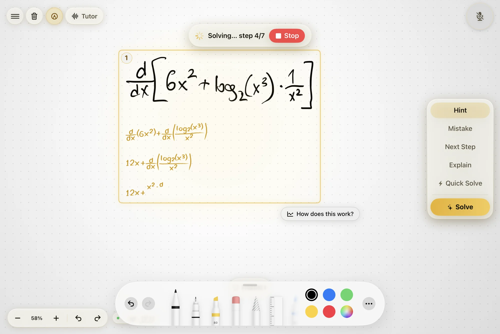
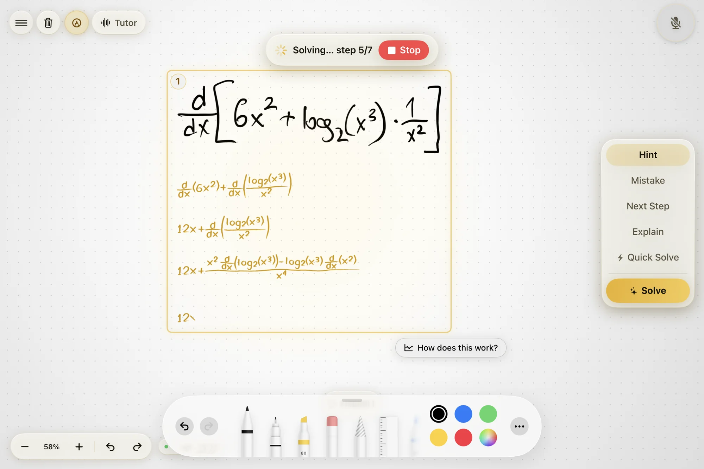
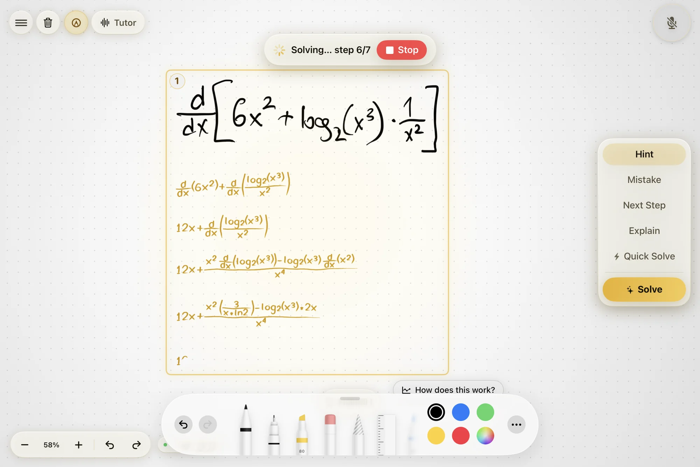
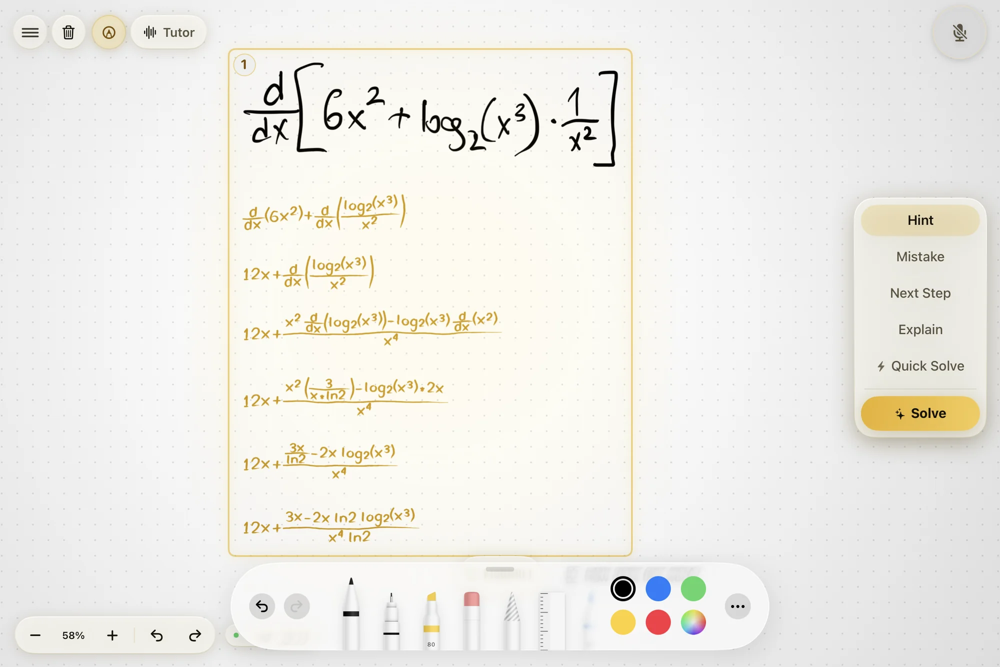
It notices things you never told it
Klera reads how the work is going the whole time, not only when you ask.
Bored isn't stuck
Everything right, fast, on problems that are too easy? The next one gets harder instead of explaining what you already know.
Struggling well is good
Rubbing something out and fixing it yourself is the best thing that can happen in a session, and it gets left alone.
It checks work you never asked about
Finish something and move on, and it quietly checks whether it was right. Nothing pops up. The next problem is just better aimed.
It knows if you tried first
Solving after one small hint and asking for the whole answer straight away count very differently.
It learns your normal
Some people press harder when they're stuck. Some go completely still before the pen touches the page. It learns which one you are.
You never see a score
No percentage, no streak, no progress bar. They make people work for the number instead of the maths.
Sit a real past paper
Built for handwritten STEM exams.
Give Klera a past paper or your study material as a PDF. It pulls out the questions and lays the paper out on the canvas, so you sit it properly, by hand, under time.
Then it marks every answer in red pen, right on your handwriting, teaches the corrections instead of just listing them, and brings back the questions you lost marks on.
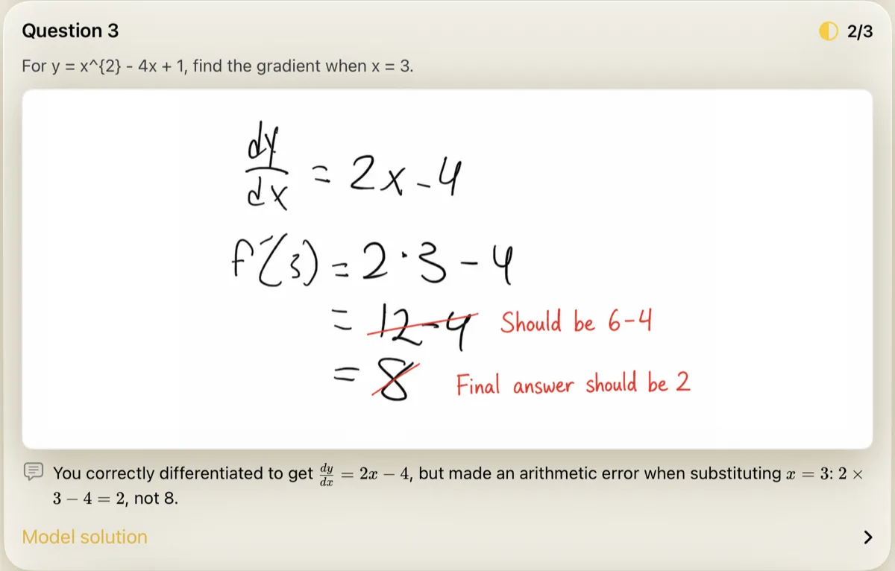
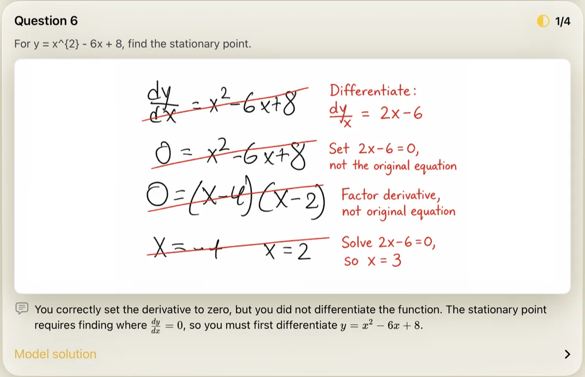
Marked by Klera after submitting. Black is the student, red is Klera.
Also in the app
The rest of what a good tutor does, between problems.
Live pictures, when they help
Klera decides when a diagram is worth drawing and builds it from your problem, in 2D or 3D. Drag it and everything recomputes. If it can't draw something honest, it says so.
A study plan by board and topic
What to revisit next, grouped the way you study. Still no marks out of a hundred.
A voice that talks you through it
Solve and lessons are narrated, so you can watch the page instead of reading a chat.
Boards that remember
Every board keeps its scroll and zoom where you left them, and you can search across all of them.
For teachers too
Classes with join codes, class materials you can mark up with the Pencil, uploaded exams and each student's results.
The right paper for the subject
Blank, graph, geometry or chemistry boards, in light or dark. One theme setting changes the board and every thumbnail with it.
Why it's different
A chatbot answers the question. A tutor answers the student.
A chatbot
Waits to be asked, then hands over the full solution. Same answer for everyone, whether they were one step away or completely lost.
Homework done. Nothing learned.
Klera
Notices the long pause and the rubbing out, knows how this student usually works, and gives the smallest nudge that gets them moving again.
The student solves it. And remembers how.
What you need
Get on the early-access list
The first builds go out on TestFlight to a small group who will use Klera on real coursework and tell us what is broken. Everyone on this list who tests the app keeps Klera Premium free for a year, whatever we charge for it later. No card, no trial that quietly turns into a subscription.
Built by students, for students
Two Bocconi students building the tutor we wished we'd had.
We sit handwritten STEM exams every semester. We are the users. Klera starts at Bocconi and PoliMi, and grows one campus at a time.
Investing in education? Read why we're building this. Want to build it with us? We're hiring.
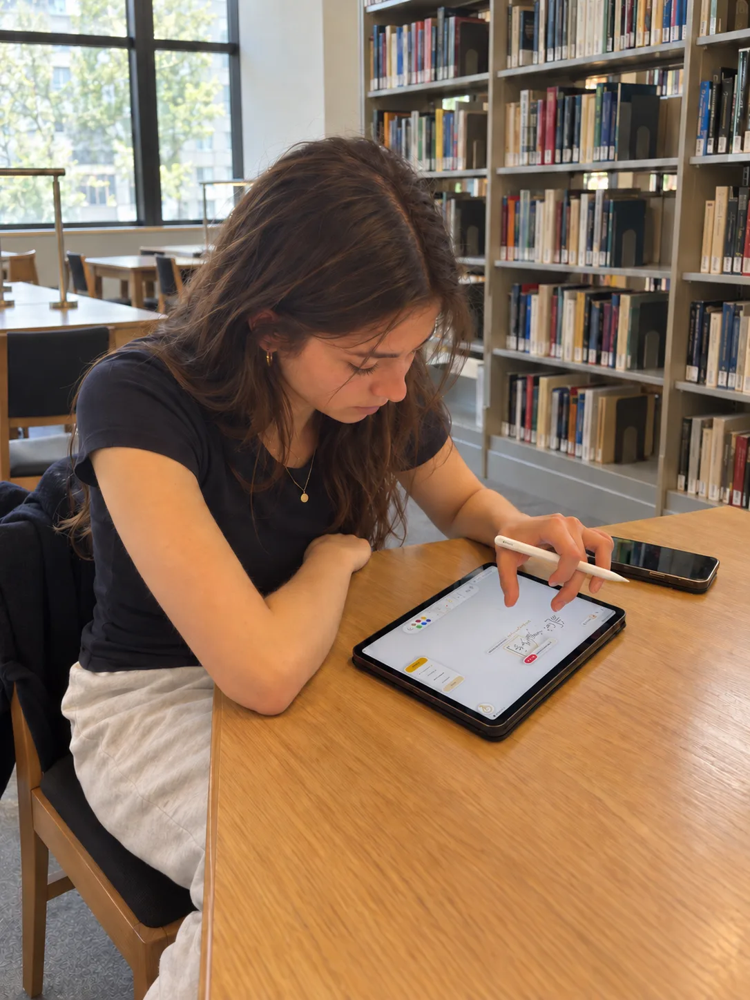